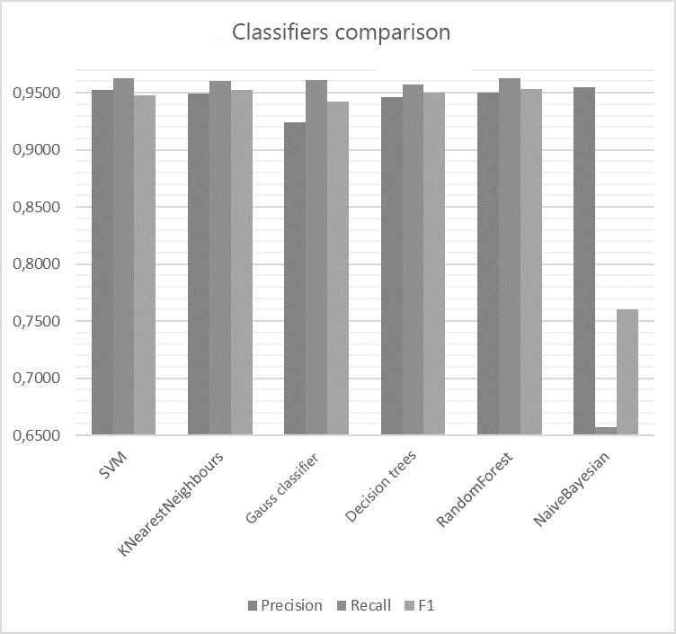

Introduction
Nowadays in the internet appear enormous amount of the news’ topics about countries’ international trade activity. But often these articles, notes and reviews are presented to user as general list which is usually sorted by the time added and doesn’t provide to evaluate the relevance of the information and find out is it corresponding with searching category. In this regard appears need of international trade automatic classification.
1. Topic relevance
Automated classification of textual information belongs to the class of difficultly formalized tasks and is currently particularly relevant due to the need to automate the process of collecting and analyzing information obtained from the Internet, based on intelligent software systems.The problem of universal automatic text classification is that it does not provide such a level of recall and classification accuracy as specialized classifiers configured for a certain class of documents. In this regard, it is often necessary to research and implement specialized algorithms.Since the amount of foreign trade information on the Internet is constantly growing, the research and development of an algorithm for the automatic classification of texts on the foreign trade information of states is an important issue.
2. The purpose and objectives of the study, the planned results
The aim of the study is to develop an algorithm for the automated classification of information on foreign trade activities of states and its introduction into the information retrieval system.
Main tasks:
- Analysis of existing methods for the classification of natural language textual information.
- Analysis of methods for collecting information on the Internet.
- Analysis of the stages of creation of an IRS.
- Development of software model architecture.
- Development of a software model of information retrieval system.
- Development of an algorithm for automated classification of information on foreign trade activities of states.
- Evaluation of an automated information classification module for an IPA on foreign trade activity of states.
The novelty is in the development of a software model for classifying information on foreign trade activity of states, obtained on the basis of the analysis of Internet pages.
It is planned that the developed algorithms and programs will form the basis of an information retrieval system that works with information on foreign trade activities of states.
3. Research and development review
In the open access is a large number of studies on the topic of automatic classification. However, studies on the classification of information on foreign trade activity of states could not be found.
3.1. International sources review
In the study of the Multi-level classification of economic articles on the basis of ontologies
[1],
Sergey Vogrinčić and Zoran Bosnik present an approach to the task of automatic categorization of documents in the field of economics. They evaluated the accuracy of the tested models and concluded that all of them have potential for use, and also based on the results revealed the advantages of using complex groups of approaches.
In this paper The study of text categorization on WEKA
[2]
three popular text categorization algorithms analyzed, namely, the naive Bayes classifier, the decision tree, and the support vector method. It is concluded that the naive Bayes classifier showed itself best in economic texts.
The article Efficiency of a homogeneous ensemble of classifiers for turkish and english texts
[3]
presents a comparative analysis of the use of homogeneous ensembles for the classification of Turkish and English texts. The conclusions show the superiority of the homogeneous ensemble Random Forest.
3.2. National sources review
In the article Analysis of information classification methods on the internet, when solving information retrieval tasks
[4]
the author considers several approaches to the classification of information and suggests using a combined approach to increase efficiency.
The article Automatic classification of text documents using neural network algorithms and semantic analysis
[5]
discusses neural network algorithms used in the problems of text classification, as well as outlines methods and models for semantic analysis of texts as applied to the problem of improving the quality of rubrication.
In the paper Comparative analysis of classification algorithms and ways of presenting web-documents
[6]
a number of classification algorithms and issues of preprocessing of texts were considered. Based on the analysis of the results of the experiments, a number of improvements to the classifiers were proposed.
3.3. Local sources review
In the abstract of Lyckin Viktor Olegovich The study of the algorithmic support of the intellectual classification system of polythematic hypertext documents
[7]
the features of the classification of documents analyzed in the case when classes may overlap and the document can be assigned to several classes.
In the abstract of Yulia Alexandrovna Tregubova the study of the method of thematically oriented classification of search results in the internet
[8]
the existing approaches to increasing the relevance of the thematic search by classifying the results of search engines analyzed.
4. Review and analysis of effectiveness of the binary classification algorithms to classify information of countries’ international trade activity
In order to choose the most effective algorithm for classifying foreign trade texts, it is necessary to analyze them on a specific sample. The task is relevant for information retrieval systems aimed at searching and processing information on international trade. The section provides an overview of information classification algorithms and their comparison when working with data on foreign trade economic activity of states.
4.1. Classification features selection
Every classification is producing on the basis of some features. In order to classify text first of all is necessary to define the values of selected features for this text. Today one of the most effective measure for necessary features automatic defining is TF-IDF
[9].
TF-IDF is statistical measure which is using for word value evaluation in document which is a part of documents collection. The word weight is proportional to its frequency in the document and inversely proportional to its frequency in the whole collection. The features count is selected as 10 randomly but considering the changing of f1 measure on the higher values of this parameter.
4.2. Data selection for classification
In purpose to test the classification algorithms is decided to use the set of classified articles from Reuters in amount of 10788 articles. The training set consists of 7769 articles and the test one from 3019. The articles are classified to 90 categories. In the study the binary classifier of articles on international trade features is implemented so other 89 categories were marked as other
.
In this work as classifiers are selected SVM (support vector machine), KNearestNeighbors, Gauss Classifier, Decision Tree, RandomForest and Naive Bayesian Classifier
4.3. Metrics calculation for algorithms
To enable comparison of the algorithms, metrics of recall, accuracy and F1 measure for each of the algorithms with different variants of their parameters.
4.3.1. SVM
SVM (support vector machine) – is the set of classification algorithms which are transfer the source vectors to the space with higher dimension and find separating hyperplane that separates presented classes
[10].
In the research this classifier is tested on the different values of kernel and penalty parameters. The metrics of precision, recall and f1 are evaluated. The results are presented in the table 1.
Table 1 – Metrics for SVC classifier
| Params |
Precision |
Recall |
F1 |
|
kernel = "linear",
C = 0.025
|
0.924 |
0.9612 |
0.9423 |
| gamma = 2, C = 1 |
0.9578 |
0.9626 |
0.946 |
| gamma = 3, C = 1 |
0.9522 |
0.9626 |
0.9477 |
According to received data and f1 measure the third parameter is optimal. In the next comparison will be used data from this row.
4.3.2. KNearestNeighbours
In the basis of KNearestNeighbors algorithm (kNN) is the rule that the tested object with its set of features belongs to the class that have majority of object’s k nearest neighbors
[11].
In the research this classifier is tested on the different values of k parameters which are 3, 5 and 10 neighbors. The metrics of precision, recall and f1 are evaluated. The results are presented in the table 2.
Table 2 – Metrics for kNN classifier
| k |
Precision |
Recall |
F1 |
| 3 |
0.946 |
0.9559 |
0.95 |
| 5 |
0.9494 |
0.9603 |
0.9527 |
| 10 |
0.9528 |
0.9566 |
0.9498 |
According to received data and f1 measure the parameter of 5 is optimal. In the next comparison will be used data from this row.
4.3.3. Gauss classifier
The main idea of gauss classifier is in suggestion that the likelihood function (training set) is known for every class and is equal to the density of the Gaussian normal distribution
[12].
In the research this classifier is tested on the different values of radial basis function argument. The metrics of precision, recall and f1 are evaluated. The results are presented in the table 3.
Table 3 – Metrics for Gauss classifier
| RBF(x) |
Precision |
Recall |
F1 |
| 1.0 |
0.924 |
0.9612 |
0.9423 |
| 0.5 |
0.924 |
0.9612 |
0.9423 |
| 1.5 |
0.924 |
0.9612 |
0.9423 |
According to received data and f1 measure the argument of RBF has low influence on results.
4.3.4. Decision tree
Decision tree is a classifier that on the training set build the structure with nodes which are difference attributes, leaves in which objective function attributes are wrote and ribs with necessary array of attributes. The goal of the decision tree is to create model which predicts value of objective function on the basis of several inputs
[13].
In the research this classifier is tested on the different values of maximum tree depth. The metrics of precision, recall and f1 are evaluated. The results are presented in the table 4.
Table 4 – Metrics for Decision tree
| max |
Precision |
Recall |
F1 |
| 5 |
0.9458 |
0.9573 |
0.9501 |
| 10 |
0.9421 |
0.9523 |
0.9465 |
| 15 |
0.943 |
0.95 |
0.9462 |
According to received data and f1 measure maximum tree depth of 5 is optimal. In the next comparison will be used data from this row.
4.3.5. RandomForest
RandomForest is a machine learning algorithm that consists in using homogeneous ensemble of decision trees. The main idea is using big ensemble of decision trees that due to big amount of them improves the result of classification
[14].
In the research this classifier is tested on the different values of maximum tree depth. The metrics of precision, recall and f1 are evaluated. The results are presented in the table 5.
Table 5 – Metrics for RandomForest
| max |
Precision |
Recall |
F1 |
| 5 |
0.924 |
0.9502 |
0.9487 |
| 10 |
0.9606 |
0.9626 |
0.9612 |
| 15 |
0.9419 |
0.953 |
0.9527 |
According to received data and f1 measure maximum tree depth of 10 is optimal. In the next comparison will be used data from this row.
4.3.6. Naive Bayesian Classifier
In the basis of Naive Bayesian Classifier is Bayes theorem. This classifier became one of the standard universal methods of classification. Advantage of this classifier is relatively small amount of data necessary for training
[15].
In the research this classifier is tested. The metrics of precision, recall and f1 are evaluated. The results are presented in the table 6.
Table 6 – Metrics for Naïve Bayesian Classifier
| Precision |
Recall |
F1 |
| 0.9551 |
0.6568 |
0.7602 |
4.4. Classifiers comparison
After testing classifiers comparative analysis by precision, recall and f1 measure is carried out
[16].
In order to big enough collection was used and due to using TF-IDF features selection algorithm the results have quiet small differences and all of them have good rates of text classification of countries’ international trade activity. Exception is only Naive Bayesian Classifier that presented f1 measure level on 0.7602 which isn’t satisfactory result for binary classification. The results of comparison are presented on the picture 1. According to weighted estimate the homogeneous ensemble RandomForset showed itself best with the maximum tree depth of 10.

Picture 1 – Classifiers comparison
(animation: 10 frames, 10 cycles of repetition, 53 kilobytes)
Conclusion
The analysis of classification algorithms as SVM, KNearestNeighbors, Gauss Classifier, Decision Trees, RandomForest and Naive Bayesian Classifier is carried out. The selection algorithm is implemented and the classification features are selected with TF-IDF. The algorithms with different parameters are tested. Optimal parameters for every algorithm on the basis of f1 measure are defined. The algorithms are compared by precision, recall and f1 measure. The homogeneous ensemble as optimal classifier for binary classification of information of countries’ international trade activity is defined. Not satisfactory results of classification with Naive Bayesian Classifier are presented.
References
-
1. Sergeja Vogrinčič1, Zoran Bosnić, Ontology-based multi-label classification of economic articles. Computer Science and Information Systems, 2011 [source in library]
-
2. Li Dan, and Liu Lihua, Zhang Zhaoxin, Research of Text Categorization on WEKA. Third International Conference on Intelligent System Design and Engineering Applications, 2013 [source in library]
-
3. Zeynep Hilal Kilimci, Selim Akyokus, Sevinc Ilhan Omurca, The Effectiveness of Homogenous Ensemble Classifiers for Turkish and English Texts. International Symposium on Innovations in Intelligent Systems and Applications (INISTA), 2016 [source in library]
-
4. Мэн Цинань, Анализ методов классификации информации в интернете при решении задач информационного поиска. Научный журнал
Моделирование, оптимизация и информационные технологии
№2(13), 2016
-
5. Андреев А.М., Березкин Д.В., Морозов В.В., Симаков К.В., Автоматическая классификация текстовых документов с использованием нейросетевых алгоритмов и семантического анализа. Всероссийская Научная Конференция, 2003 [source in library]
-
6. Максаков Алексей, Сравнительный анализ алгоритмов классификации и способов представления Web-документов. Третий российский семинар по оценке методов информационного поиска, 2005 [source in library]
-
7. Линкин В.О., Исследование алгоритмического обеспечения интеллектуальной системы классификации политематических гипертекстовых документов, 2013 [Электронный ресурс]. – Режим доступа:http://masters.donntu.org/2013/fknt/linkin/diss/index.htm
-
8. Трегубова Е.А., Исследование метода тематически ориентированной классификации результатов поиска в Интернет, 2014 [Электронный ресурс]. – Режим доступа:http://masters.donntu.org/2014/fknt/tregubova/diss/index.htm
-
9. Salton, G. and Buckley, C. Term-weighting approaches in automatic text retrieval. Information Processing & Management, 1988
-
10. Nello Cristianini, John Shawe-Taylor An Introduction to Support Vector Machines and Other Kernel-based Learning Methods. — Cambridge University Press, 2000
-
11. Brett Lantz, Machine Learning with R. Pack Publishing. Birmongham-Mumbai, 2013
-
12. Breiman, Leo; Friedman, J.H., Olshen, R.A., & Stone, C.J. Classification and regression trees. Monterey, CA: Wadsworth & Brooks/Cole Advanced Books & Software, 1984
-
13. Hastie, T., Tibshirani R., Friedman J. Chapter 15. Random Forests // The Elements of Statistical Learning: Data Mining, Inference, and Prediction. — 2nd ed. — Springer-Verlag, 2009. — 746 с.
-
14. Hand, DJ, & Yu, K. «Idiot’s Bayes — not so stupid after all?» International Statistical Review, 2001. - с 385—399.
-
15. 7. Е.И. Большакова Автоматическая обработка текстов на естественном языке и компьютерная лингвистика: учеб. пособие / Большакова Е.И., Клышинский Э.С., Ландэ Д.В., Носков А.А., Пескова О.В., Ягунова Е.В. — М.: МИЭМ, 2011. — 272 с.
-
16. Титаренко М.Г., Коломойцева И.А. Обзор и анализ алгоритмов для осуществления бинарной классификации информации о внешнеторговой деятельности государств // Материалы международной научно-практическаой конференции «Программная инженерия: методы и технологии разработки информационновычислительных систем» (ПИИВС-2018) – Донецк: ДонНТУ, 2018 [source in library (russian)][source in library (english)]